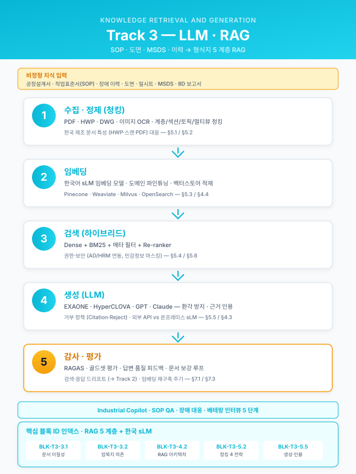

Track 3 — LLM·RAG 공정 적용 공통 본문 목차¤
📖 약 29 분 읽기

이 페이지 둘러보기
본 페이지는 약 561 줄 / H2 섹션 6 개 입니다. 우측 목차 (TOC) 를 활용하여 원하는 섹션으로 빠르게 이동할 수 있습니다.
서문¤
본 문서는 부산·경남권 철강·금속·고무·정밀가공 제조업체를 고객으로 하는 제조 AI 관련 정부지원 사업계획서·사업신청서·수행계획서·연구개발계획서 작성 시, LLM 과 RAG 을 제조 현장에 적용하는 본문(Track 3) 에 반복적으로 투입되는 내용을 모듈 단위로 재사용 할 수 있도록 설계한 공통 목차이다. Track 3 는 단독 사업으로도, Track 1(제조 AI 서두/본문) 의 확장 파트로도, Track 2(MLOps) 와 결합된 운영 체계의 일부로도 삽입 가능하도록 설계되었다.
제조 현장에는 센서·MES 등의 정형 데이터 뿐 아니라 공정설계서·작업표준서·장애 이력·도면·밀시트·MSDS·8D 보고서 등 방대한 비정형 지식 자산 이 존재한다. 이들 자산은 전통적 AI 로는 활용이 어려우며, 베테랑의 암묵지에 의존해 왔다. Track 3 본문은 이 비정형 지식을 LLM·RAG 파이프라인으로 형식지화·검색·추천·생성 가능한 자산으로 전환하는 과정을 일반화된 구축 논리로 서술한다. 각 블록은 고객사·지원사업 포맷이 달라져도 최소한의 수정으로 재사용 가능하도록 설계하였으며, 철강·금속가공을 기본 도메인으로 하되 타 업종 대응 지점은 대안 문구 또는 옵션 블록으로 표시하였다.
ℹ️ 페이지 정보 (워크스페이스 메타)
플레이스홀더 범례 — [고객사] 고객사명, [공정] 대상 공정명, [수치] 수치, [기간] 기간, [%] 비율, [문서종] 대상 문서군(예: 공정설계서·SOP·밀시트·MSDS 등), [LLM모델] 선정 LLM(예: EXAONE·HyperCLOVA·GPT·Claude 등), [벡터스토어] 벡터스토어(예: Pinecone·Weaviate·Milvus·OpenSearch 등).
특정 고객사 전용 문구는 공통 자산과 분리되며, 본 문서는 고정 공통 블록 기준으로 작성됨. 제품·모델명(EXAONE·HyperCLOVA·GPT·Claude·Pinecone·Weaviate·Milvus·OpenSearch·Feast·MLflow 등) 은 실제 명칭을 유지한다.
목차 전체 구조¤
1. LLM·RAG 도입 필요성 및 거시 환경
1.1 생성형 AI·LLM 제조 확산 트렌드
1.2 제조 현장 비정형 지식 자산의 전략적 가치
1.3 암묵지 휘발 리스크 및 지식 자산화 당위성
1.4 국내외 제조 LLM·RAG 정책·지원사업 맥락
2. 제조 현장의 비정형 지식 자산 분석
2.1 문서·이미지·도면·이력 — 지식 자산 유형 분류
2.2 비정형 데이터 보유 현황 매트릭스
2.3 지식 자산의 품질·표준화·권한 특성
2.4 대상 시나리오 선정 기준 및 우선순위화
3. 현황 및 문제점 (AS-IS): 지식 파편화·휘발 리스크
3.1 문서 포맷 이질성 및 검색 불가 상태
3.2 숙련자 암묵지 의존 및 지식 이전 실패
3.3 장애·불량 이력의 재사용 불가 구조
3.4 규제·안전 문서 파편화 및 준수 리스크
4. 목표 모습 (TO-BE): RAG 아키텍처 및 핵심 구성요소
4.1 TO-BE 지능형 지식 플랫폼 개념도
4.2 RAG 기준 아키텍처 (수집→정제→청킹→임베딩→검색→생성→감사)
4.3 LLM 모델 선택 전략 — 외부 API vs 온프레미스 sLM
4.4 벡터스토어·검색 인프라 선정 기준
4.5 멀티 시나리오 지식 플랫폼 재사용 설계
5. 구축 상세 — 데이터 수집부터 응답·권한까지
5.1 문서 수집·정제 (PDF·HWP·DWG·이미지 OCR)
5.2 청킹 전략 (계층·섹션·토픽·멀티뷰)
5.3 임베딩 모델 선택 및 파인튜닝
5.4 검색기 설계 (하이브리드: Dense + BM25 + 메타 필터 + Re-ranker)
5.5 LLM 응답 생성 — 환각 방지·근거 인용·거부 정책
5.6 권한·보안 (AD/HRM 연동, 민감정보 마스킹, 감사 로그)
6. 현장 배포·UX·피드백
6.1 현장 UX — 태블릿·모바일·HMI·음성·QR 통합
6.2 휴먼 에스컬레이션 및 숙련자 검수 루프
6.3 답변 품질 피드백 수집 및 문서 보강 루프
6.4 MES·CMMS·QMS 등 기존 시스템 연동
7. 평가·운영·지속 개선
7.1 RAG 평가 체계 (RAGAS·기업 내 Q/A 테스트셋)
7.2 검색·응답 품질 모니터링 및 드리프트 탐지 (→ Track 2)
7.3 재학습·문서 보강·임베딩 재구축 주기
8. 기대효과·확장 로드맵
8.1 정량 기대효과 (AS-IS vs TO-BE)
8.2 정성 기대효과 및 지식 경영 연계
8.3 단계별 확장 로드맵 (시나리오 순차 온보딩)
각 소섹션별 카드¤
1.1 생성형 AI·LLM 제조 확산 트렌드¤
- 목적: "왜 지금, 제조업에 LLM·RAG 인가" 를 글로벌 거시 흐름으로 정당화한다.
- 포함 내용:
- 범용 LLM(GPT · Claude 등) 의 기업 도입 급증, 제조 도메인 특화 sLM 출현(EXAONE · HyperCLOVA 등)
- 선진 제조기업의 Industrial Copilot 도입 사례(지식검색·SOP QA·장애 대응)
- RAG 가 미세 파인튜닝보다 기업 문서 활용에 효과적·경제적임을 보인 업계 합의
- 한국 제조업의 문서 자산 특성(HWP·스캔 PDF 비중 높음) 과 RAG 적합성
- 삽화·도식 후보: 글로벌 Industrial Copilot 도입 트렌드 막대차트, LLM·RAG 활용 영역 스펙트럼(지식검색 → 문서작성 → 에이전트) 다이어그램, 파인튜닝 vs RAG 비교 매트릭스.
- 고객사별 가변 여부: 공통 고정. 업종별 통계 그래프만 교체.
- [관련 시나리오: 전체 SCN-LLM-01~04 배경]
1.2 제조 현장 비정형 지식 자산의 전략적 가치¤
- 목적: 제조 기업이 보유한 비정형 문서·이력이 제3의 경쟁 자산 임을 설득한다.
- 포함 내용:
- 공정설계서·작업표준서·장애 이력·밀시트·도면·MSDS 등 누적 [수치]건 규모의 기업 내부 지식
- "베테랑의 머릿속" 과 "문서 캐비닛" 에 잠긴 지식을 형식지·검색 가능한 자산으로 재구성하는 의미
- 지식 자산화가 곧 신입 온보딩 가속·재현성·품질 안정성·규제 대응 으로 이어지는 연결고리
- 삽화·도식 후보: 기업 지식 자산 빙산 다이어그램(형식지/암묵지), 문서·이력·경험의 3층 구조도.
- 고객사별 가변 여부: 공통 고정. 수치·문서군 예시만 업종별 교체.
- [관련 시나리오: SCN-LLM-01, SCN-LLM-02, SCN-STL-07, SCN-MET-07]
1.3 암묵지 휘발 리스크 및 지식 자산화 당위성¤
- 목적: Track 1 의 3.1(암묵지 리스크) 와 호응하되, Track 3 가 그 해결책의 본체임을 명시한다.
- 포함 내용:
- 1~2명 베테랑 숙련공 퇴직·이직 시 공정설계·장애대응·레시피 결정 역량이 즉각 소실되는 구조
- 인구 고령화·숙련공 감소 추세 속에서 지식 디지털화가 사업 연속성(BCP) 수단으로 격상됨
- 기존 ERP/MES 로는 담기 어려운 문장 단위 의사결정 이유·선례·제약 을 RAG 가 수용할 수 있음
- 삽화·도식 후보: 암묵지 → 형식지 → 지능형 어시스턴트 3단 전환 다이어그램, 숙련공 퇴직 시나리오별 손실 영향도 인포그래픽.
- 고객사별 가변 여부: 공통 고정. 수치만 교체.
- [관련 시나리오: SCN-STL-07, SCN-LLM-01, SCN-LLM-02, SCN-MET-07]
1.4 국내외 제조 LLM·RAG 정책·지원사업 맥락¤
- 목적: 본 사업이 현행 정부·지자체·대기업 상생 지원사업 방향성과 정합함을 입증한다.
- 포함 내용:
- 제조AI특화 스마트공장·디지털 경남·대중소상생(LG·삼성·포스코 AI 트랙)·전사적 DX 촉진 R&D·클라우드 종합솔루션 등에서 LLM·RAG 요구 증가
- 국가 AI 전략 및 K-Industrial AI 정책 기조와 본 사업의 연결고리
- 보안·데이터주권 관점의 온프레미스 sLM 육성 흐름(EXAONE · HyperCLOVA 등)
- 삽화·도식 후보: 지원사업 × LLM·RAG 적용 매트릭스, 정책 타임라인.
- 고객사별 가변 여부: 사업별 교체. 지원사업명만 바꿔 재사용.
- [관련 시나리오: 전 LLM 시나리오, SCN-SAF-02, SCN-SAF-03]
2.1 문서·이미지·도면·이력 — 지식 자산 유형 분류¤
- 목적: 학습·검색·생성에 투입될 비정형 지식을 유형별로 분류해 범위를 확정한다.
- 포함 내용:
- 표준·절차 문서: SOP·작업표준·교육자료·품질규정(HWP·PDF)
- 설계·도면 자산: CAD 도면(DWG·DXF), 공정설계서(Excel·PDF), BOM
- 이력·운영 로그: CMMS 장애 이력, 8D 보고서, 불량 사례집, 변경점 관리(EC) 이력
- 외부·공급사 문서: 밀시트·성적서(이미지 PDF), MSDS, 법규 문서(화관법·화평법·CBAM)
- 이미지·멀티모달 자산: 결함 사진·현미경 이미지·설비 사진·작업 영상
- 삽화·도식 후보: 5유형 분류 인포그래픽, 유형별 예시 문서 썸네일 그리드.
- 고객사별 가변 여부: 업종별 교체(철강은 밀시트·공정설계 비중 / 고무는 배합표 / 정밀가공은 도면 비중).
- [관련 시나리오: SCN-LLM-01 SOP, SCN-LLM-04 도면, SCN-STL-08 밀시트, SCN-SAF-03 MSDS, SCN-MET-07 공구·금형]
2.2 비정형 데이터 보유 현황 매트릭스¤
- 목적: Track 1 의 2.4(제조 데이터 보유 현황) 에 대응하는 비정형 문서판(版) 을 제공한다.
- 포함 내용:
- 문서군 × 보유량(건수/GB) × 포맷 × 스캔 여부 × 권한 등급 × 수집 난이도 매트릭스
- 신규 증가량(월·분기 단위) 및 업무 프로세스 상 생성 포인트
- OCR · 파서 필요 여부, 민감도 분류(대외비·개인정보·영업비밀)
- 삽화·도식 후보: 비정형 자산 보유현황 대형 표, 포맷별 비중 파이차트, 스캔 PDF 비중 강조.
- 고객사별 가변 여부: 고객사별 전면 교체. 표 골격과 컬럼 정의는 공통.
- [관련 시나리오: SCN-STL-08, SCN-LLM-04, SCN-SAF-03]
2.3 지식 자산의 품질·표준화·권한 특성¤
- 목적: 단순 보유량이 아닌 RAG 투입 가능성 을 결정하는 품질·표준화·권한 차원을 분석한다.
- 포함 내용:
- 표준화 수준(양식 통일 / 부서별 제각각 / 프리폼)
- 문서 최신성·버전관리 상태(최종 승인본 추적 가능 여부)
- 부서·직무별 열람 권한 체계(전사 공개 / 부서 한정 / 개인 한정)
- 메타데이터 존재 여부(작성자·일자·공정·설비·제품군 태그)
- 삽화·도식 후보: 품질 × 권한 × 최신성 3축 레이더 차트, 문서군별 RAG 준비도 등급표(A/B/C).
- 고객사별 가변 여부: 공통 고정. 문서군 예시만 교체.
- [관련 시나리오: SCN-LLM-01, SCN-LLM-04, SCN-STL-08]
2.4 대상 시나리오 선정 기준 및 우선순위화¤
- 목적: 다수 시나리오 중 본 사업에서 무엇을 먼저·어디까지 다룰지 선정 논리를 제시한다.
- 포함 내용:
- Quick Win 기준: 문서 표준화 수준 高 + 질의 빈도 高 + 권한 이슈 낮음 (SOP RAG · 공구·금형 RAG 등)
- 고난이도 장기 과제: 공정설계 LLM · 불량보고서 자동생성 (정교한 도메인 지식·휴먼 검수 필요)
- 규제 대응형: MSDS RAG · CBAM 문서 RAG (외부 감사 대비)
- 선정 매트릭스(난이도 × 기대효과 × 데이터 준비도) 로 4분면 배치
- 삽화·도식 후보: 4분면 우선순위 매트릭스(Quick Win / Big Bet / 규제 / 장기), 단계별 시나리오 로드맵.
- 고객사별 가변 여부: 고객사·사업별 교체.
- [관련 시나리오: SCN-LLM-01, SCN-LLM-02, SCN-LLM-03, SCN-LLM-04, SCN-STL-07, SCN-STL-08, SCN-MET-07, SCN-SAF-03]
3.1 문서 포맷 이질성 및 검색 불가 상태¤
- 목적: 첫 번째 AS-IS 근거 — 문서가 존재해도 검색·활용이 안 되는 구조적 한계를 지적.
- 포함 내용:
- HWP · PDF · Excel · 스캔 이미지 · DWG 등 [수치]종 포맷 혼재
- 파일 서버·개인 PC·공유 메일함에 산재, 중앙 저장소 부재
- 전문 검색이 파일명·폴더 기반에만 의존, 내용 검색 불가
- 동일 내용의 복수 버전 공존, 최신본 식별 불가 — 오작업 유발
- 삽화·도식 후보: 파일 서버 혼잡 개념도, 포맷·저장소 파편화 매트릭스, "작업자 1명이 특정 절차를 찾는 데 [기간] 소요" 타임라인.
- 고객사별 가변 여부: 공통 고정. 포맷 종류와 수치만 교체.
- [관련 시나리오: SCN-LLM-01, SCN-LLM-04, SCN-STL-08, SCN-MET-07]
3.2 숙련자 암묵지 의존 및 지식 이전 실패¤
- 목적: 두 번째 AS-IS 근거 — 문서화 자체가 이루어지지 않은 살아있는 지식 의 휘발 리스크.
- 포함 내용:
- 공정설계·레시피 결정 이유, 장애 처치 순서, 불량 원인 판단 근거가 베테랑 머릿속에만 존재
- 신입 OJT 기간 [기간] 동안 베테랑 1:1 밀착이 필요하나 인력 부족으로 생략·축소
- 교대 근무·부서 간 지식 단절, 일지·메모 수준의 기록만 남음
- 경쟁사 이직 시 기술 유출 리스크와 맞물림
- 삽화·도식 후보: 지식 이전 실패 계단 다이어그램(전달 → 기록 → 검색 → 활용 각 단계의 드롭오프), 연령대별 핵심 지식 분포 피라미드.
- 고객사별 가변 여부: 공통 고정. 직무·기간 수치만 교체.
- [관련 시나리오: SCN-STL-07, SCN-LLM-01, SCN-LLM-02]
3.3 장애·불량 이력의 재사용 불가 구조¤
- 목적: 세 번째 AS-IS 근거 — 과거 해결 경험이 미래 대응에 활용되지 못하는 구조.
- 포함 내용:
- CMMS 자유 텍스트 이력이 검색·집계 불가능한 품질로 기록됨
- 동일 장애가 반복 발생해도 과거 대응 이력 찾기에 [기간] 소요
- 8D·5Why 보고서 작성에 수시간~수일 소요, 담당자 편차 큼
- 불량 보고서의 근거 데이터(검사값·이미지·이력) 가 본문에서 분리 저장되어 사후 재분석 난해
- 삽화·도식 후보: 장애 대응 사이클(발생 → 검색 → 처치 → 기록) 에서 검색 단계 병목 강조 플로우, 유사 장애 반복 발생 추이 그래프.
- 고객사별 가변 여부: 공통 고정. 장애·불량 유형과 수치만 교체.
- [관련 시나리오: SCN-LLM-02 장애 RAG, SCN-LLM-03 불량 보고서]
3.4 규제·안전 문서 파편화 및 준수 리스크¤
- 목적: 네 번째 AS-IS 근거 — 규제·안전 문서의 분산이 법적 리스크로 이어지는 구조.
- 포함 내용:
- MSDS·화관법·화평법·CBAM·K-ETS 문서가 부서별·공급사별 분산 관리
- 신규 화학물질 도입 시 혼합 위험성·취급 절차 검토 누락 리스크
- 중대재해처벌법 시행 이후 관리감독 의무 이행 증빙 문서의 체계적 연결 요구 증가
- 외부 감사·고객 감사 대비 문서 소집·정합성 확인에 수일 소요
- 삽화·도식 후보: 규제 문서 체계도, 중대재해·CBAM·K-ETS 감사 대비 체크리스트 매트릭스.
- 고객사별 가변 여부: 공통 고정. 적용 규제만 업종별 교체.
- [관련 시나리오: SCN-SAF-03 MSDS RAG, SCN-SAF-02 CBAM, SCN-UTL-03 환경 규제]
4.1 TO-BE 지능형 지식 플랫폼 개념도¤
- 목적: AS-IS 대비 바뀌는 지식 운영 구조를 한 장으로 압축해 보인다.
- 포함 내용:
- AS-IS(파일 서버 산재 · 검색 불가 · 암묵지 의존) → TO-BE(중앙 지식 플랫폼 · 자연어 질의 · 근거 제시 응답) 대비 표
- 3단 핵심 전략(지식 수집·정제 → 지식 모델링·검색 → 지능형 어시스턴트)
- 본 사업으로 구축할 범위(파일럿 시나리오 · 지원 직무 · 대상 사용자 수)
- 삽화·도식 후보: AS-IS/TO-BE 좌우 대조 다이어그램, 3-STEP Solution Architecture(수집·정제 → 검색·생성 → 현장 어시스턴트).
- 고객사별 가변 여부: 공통 템플릿 + 문구 교체.
- [관련 시나리오: SCN-LLM-01, SCN-LLM-02, SCN-STL-07]
4.2 RAG 기준 아키텍처 (수집→정제→청킹→임베딩→검색→생성→감사)¤
- 목적: Track 3 의 4.6 격(格) — 전체 RAG 파이프라인을 한 장의 대형 다이어그램으로 압축.
- 포함 내용:
- 수집 계층: 파일 서버·DMS·MES·CMMS·메일 커넥터, 주기·증분·이벤트 수집
- 정제 계층: 파서(PDF·HWP·DWG·이미지 OCR), 메타데이터 추출, 권한 태깅
- 청킹·임베딩 계층: 문서 유형별 청킹 정책, 멀티뷰 임베딩, 벡터스토어 적재
- 검색 계층: Dense + BM25 하이브리드, 메타 필터, Re-ranker
- 생성 계층: LLM 프롬프팅, 근거 인용(Citation) 강제, Reject 정책
- 감사·운영 계층: 질의·응답 로그, 피드백 수집, 모니터링 대시보드
- 삽화·도식 후보: 대형 RAG 파이프라인 다이어그램 1장(한 페이지 풀 사이즈). Mermaid 예시:
flowchart LR A[문서 소스 SOP/도면/CMMS/MSDS] --> B[수집 커넥터 증분·이벤트] B --> C[파서·OCR PDF/HWP/DWG] C --> D[청킹·메타 추출 권한 태깅] D --> E[임베딩 멀티뷰] E --> F[벡터스토어 Pinecone/Weaviate/Milvus/OpenSearch] G[사용자 질의 태블릿/HMI] --> H[하이브리드 검색 Dense+BM25+메타] F --> H H --> I[Re-ranker] I --> J[LLM 생성 근거 인용] J --> K[응답·인용 현장 UX] K --> L[피드백·감사 로그] L --> D - 고객사별 가변 여부: 공통 고정(노드 이름 일부 교체).
- [관련 시나리오: 전 SCN-LLM 시나리오의 기준 아키텍처]
4.3 LLM 모델 선택 전략 — 외부 API vs 온프레미스 sLM¤
- 목적: LLM 선정의 보안 · 비용 · 성능 · 주권 트레이드오프를 명시적으로 서술한다.
- 포함 내용:
- 외부 API 계열(GPT · Claude 등): 품질·한국어 이해 상위, 최신성·기능 업데이트 빠름, 그러나 민감 정보 외부 전송·토큰 단가 이슈
- 온프레미스 sLM 계열(EXAONE · HyperCLOVA · 오픈소스 Llama·Qwen 등): 데이터 주권·보안·고정비 유리, 인프라·운영 부담 존재, 도메인 파인튜닝 가능
- 하이브리드 라우팅: 민감도 · 질의 유형 · 응답 지연 요건에 따른 분기(민감 질의 → 온프레미스, 일반 질의 → 외부 API)
- 선택 기준 요약: 데이터 민감도가 결정적 변수이며, 영업비밀·고객정보 포함 시 온프레미스 우선 · 범용 지식 검색은 외부 API 허용
- 삽화·도식 후보: 외부 API vs 온프레미스 sLM 트레이드오프 매트릭스(보안·비용·성능·운영), 하이브리드 라우팅 결정 트리.
- 고객사별 가변 여부: 고객사 보안정책·예산별 교체. 외부 API 사용 가능 여부가 가장 큰 분기점.
- [관련 시나리오: 전 SCN-LLM 시나리오, SCN-STL-07, SCN-STL-08, SCN-SAF-03]
4.4 벡터스토어·검색 인프라 선정 기준¤
- 목적: 벡터스토어 · 검색기 · 메타DB 의 선택 근거를 기술적으로 명시한다.
- 포함 내용:
- 후보 벡터스토어: Pinecone(매니지드 · 운영 부담 낮음), Weaviate(온프레미스·하이브리드 네이티브), Milvus(대규모 분산), OpenSearch(BM25 + 벡터 일체형)
- 선정 기준: 온프레미스 요구 · 데이터 규모 · 검색 QPS · 하이브리드 필요성 · 운영 인력
- 메타데이터 필터·권한 필터 지원 여부, 멀티테넌시(부서·공장·권한별 격리)
- 쿼리 라우팅·캐싱 레이어 설계
- 삽화·도식 후보: 벡터스토어 4종 비교 매트릭스, 규모·온프레미스 요구에 따른 의사결정 트리.
- 고객사별 가변 여부: 고객사 인프라·규모별 교체. 제품명은 유지.
- [관련 시나리오: SCN-LLM-01~04 공통 기반]
4.5 멀티 시나리오 지식 플랫폼 재사용 설계¤
- 목적: 단일 RAG 엔진이 아닌 복수 시나리오에 공유되는 플랫폼 을 설계한다.
- 포함 내용:
- 공통 자산층(파서·임베딩·벡터스토어·권한) 과 시나리오별 특화층(프롬프트·메타 스키마·UX) 분리
- 시나리오 추가 시 증분 비용 을 낮추는 플랫폼 사고
- 시나리오 간 지식 교차 참조(장애 RAG 가 SOP RAG 를 호출, 불량 보고서가 밀시트 OCR 결과를 참조 등)
- 거버넌스 위원회 · 문서 오너십 · 변경 관리 프로세스
- 삽화·도식 후보: 플랫폼 레이어 다이어그램(공통 vs 특화), 시나리오 간 호출 그래프.
- 고객사별 가변 여부: 공통 고정. 시나리오 선택만 교체.
- [관련 시나리오: 전 SCN-LLM 시나리오 통합]
5.1 문서 수집·정제 (PDF·HWP·DWG·이미지 OCR)¤
- 목적: RAG 의 품질을 좌우하는 입력 데이터 정비 단계의 세부 계획을 서술.
- 포함 내용:
- 수집 커넥터: 파일서버(SMB · S3) · DMS · 이메일 · MES · CMMS · SharePoint 등
- 파서: PDF(텍스트 + 레이아웃), HWP(국산 문서 전용), Word, Excel, DWG/DXF, 이미지 OCR
- 스캔 PDF 대응: 고정밀 OCR + Layout 분석(표·머리말·서명 영역), 수식·도면 주석 처리
- 정제: 중복 제거, 개행·공백 정리, 표 구조 복원, 외국어 혼재 정규화
- 메타데이터 추출: 작성자·일자·공정·설비·버전·승인상태
- 삽화·도식 후보: 수집·정제 파이프라인 블록도, 포맷별 파서 매트릭스, OCR 전·후 예시 비교.
- 고객사별 가변 여부: 문서 유형별 교체. 국산 HWP·국문 OCR 은 필수.
- [관련 시나리오: SCN-STL-08 밀시트 OCR, SCN-LLM-04 도면, SCN-LLM-01 SOP]
5.2 청킹 전략 (계층·섹션·토픽·멀티뷰)¤
- 목적: 청킹 품질이 검색 품질을 결정 함을 인식시키고 전략적 분할 설계를 서술한다.
- 포함 내용:
- 계층 청킹: 문서 → 장 → 절 → 문단, 검색 시 상위 컨텍스트 동반 반환
- 섹션 기반: SOP·MSDS처럼 구조화된 문서의 표준 섹션을 경계로 분할
- 토픽 기반: 자유 문서의 의미 단위(SentenceWindow · Semantic Chunking)
- 멀티뷰 임베딩: 동일 청크를 복수 표현(원문 · 요약 · 키워드)으로 임베딩해 질의 다양성 커버
- 청크 크기 · 오버랩 · 메타데이터 첨부(출처 · 페이지 · 부서 · 권한 태그)
- 삽화·도식 후보: 청킹 전략 3유형 비교도, 멀티뷰 임베딩 개념도, 청크 크기 대 검색 정확도 실험 차트.
- 고객사별 가변 여부: 문서 유형별 교체. 전략 유형 자체는 공통.
- [관련 시나리오: SCN-LLM-01, SCN-LLM-02, SCN-LLM-04, SCN-SAF-03]
5.3 임베딩 모델 선택 및 파인튜닝¤
- 목적: 임베딩 모델의 다국어·도메인 적합성 이 검색 품질의 또 다른 축임을 서술.
- 포함 내용:
- 공개 다국어 임베딩(OpenAI · Cohere · BGE · E5 · KoSimCSE 등) 벤치마크
- 한국어·공정 전문 용어(듀플렉스강·가류·패스스케줄 등) 에 대한 공개 모델의 한계
- 도메인 파인튜닝 전략: 쌍(query, positive, negative) 데이터셋 구성, Triplet/InfoNCE Loss, LoRA 효율 튜닝
- 재임베딩(리인덱싱) 주기 및 비용 관리
- 삽화·도식 후보: 공개 모델 한국어 벤치마크 표, 파인튜닝 전·후 Recall@k 비교 차트.
- 고객사별 가변 여부: 공통 고정. 벤치마크 수치만 교체.
- [관련 시나리오: SCN-STL-07, SCN-LLM-01, SCN-LLM-04]
5.4 검색기 설계 (하이브리드: Dense + BM25 + 메타 필터 + Re-ranker)¤
- 목적: 단일 Dense 검색의 한계를 보완하는 하이브리드 검색 · 재정렬 구조를 서술.
- 포함 내용:
- Dense(의미 기반) 와 BM25(키워드 기반) 의 상호보완 — 제품코드·규격번호 같은 희귀 토큰은 BM25 가 강함
- 메타 필터(부서 · 공정 · 설비 · 날짜 · 권한) 선적용으로 검색 공간 축소
- Re-ranker(Cross-Encoder) 로 상위 N 을 재정렬, Precision 향상
- 질의 유형별 라우팅(코드 질의 → BM25 가중, 자연어 질의 → Dense 가중)
- Fusion 전략(RRF · Weighted) 및 파라미터 튜닝
- 삽화·도식 후보: 하이브리드 검색 아키텍처(쿼리 → 필터 → Dense/BM25 병렬 → Fusion → Re-rank), 검색 품질 A/B 테스트 결과 표.
- 고객사별 가변 여부: 공통 고정. 문서 특성별 가중치만 교체.
- [관련 시나리오: SCN-LLM-02, SCN-LLM-04, SCN-MET-07]
5.5 LLM 응답 생성 — 환각 방지·근거 인용·거부 정책¤
- 목적: LLM 의 환각(Hallucination) 리스크를 차단하고 현장 신뢰를 확보하는 응답 설계.
- 포함 내용:
- 근거 인용(Citation) 강제: 답변 문장별로 출처 문서·페이지·청크 ID 링크
- Reject 정책: 검색 근거가 임계 이하이면 "근거 부족으로 답변 불가" 를 명시적으로 반환
- 신뢰도 스코어: 검색 유사도·Re-rank 점수·응답 일관성 검사로 답변 신뢰도 표기
- 프롬프트 설계: 시스템 프롬프트에 "근거 문서 외 정보 생성 금지" 엄격 명시, 도메인 규제 준수 문구 삽입
- 휴먼 에스컬레이션 트리거: 신뢰도 하락 · 질의 민감 · 규제 관련 질의는 담당자 승인 루트로 자동 전환
- 삽화·도식 후보: 응답 생성 워크플로우(검색 결과 → 프롬프트 → LLM → Citation 검증 → 응답), Citation 표시 UI 목업.
- 고객사별 가변 여부: 공통 고정. 규제·민감도 정책만 업종별 조정.
- [관련 시나리오: SCN-LLM-01, SCN-LLM-02, SCN-LLM-03, SCN-SAF-03]
5.6 권한·보안 (AD/HRM 연동, 민감정보 마스킹, 감사 로그)¤
- 목적: **"기업 지식 RAG 은 보안 프로젝트" ** 임을 명시하고 권한·감사 체계를 서술.
- 포함 내용:
- 사내 AD(Active Directory) · HRM(인사시스템) 연동으로 사용자·부서·직무·권한 동기화
- 문서 단위 ACL 을 벡터스토어 메타 필터로 강제, 검색 단계에서 차단
- 개인정보·영업비밀 자동 마스킹(정규식 · NER · LLM 필터링), 외부 API 전송 전 마스킹 레이어
- 질의·응답 전체 감사 로그(누가·언제·무엇을·어떤 문서로) 불변 저장
- 퇴직·부서이동 시 권한 즉시 회수, 감사·규제 대응 체계
- 삽화·도식 후보: 권한·보안 아키텍처(AD → 권한 매트릭스 → 벡터스토어 필터 → LLM 라우팅 → 감사 로그), 민감정보 마스킹 파이프라인.
- 고객사별 가변 여부: 고객사 보안정책·IT 환경별 교체. 외부 API 허용 여부가 핵심 분기.
- [관련 시나리오: 전 SCN-LLM, SCN-SAF-03]
6.1 현장 UX — 태블릿·모바일·HMI·음성·QR 통합¤
- 목적: RAG 의 효용은 현장 접근성 에서 결정됨을 강조하고 멀티채널 UX 를 서술.
- 포함 내용:
- 현장 태블릿·스마트폰 앱(질의 · 답변 · 인용 · 피드백)
- HMI·MES 화면 내 임베디드 위젯(설비 앞에서 바로 질의)
- 음성 인터페이스(소음·장갑 환경 대응), QR 기반 설비·공구·금형 컨텍스트 자동 주입
- 다국어(한국어·영어·동남아권 외국인 근로자) 지원
- 오프라인·네트워크 단절 환경의 캐시 모드
- 삽화·도식 후보: 멀티채널 UX 목업(태블릿·HMI·음성), QR 스캔 → 컨텍스트 주입 시퀀스 다이어그램.
- 고객사별 가변 여부: 고객사 현장 환경별 교체(디바이스 · 언어 · 오프라인 요건).
- [관련 시나리오: SCN-LLM-01 SOP, SCN-LLM-02 장애, SCN-MET-07 공구·금형, SCN-SAF-03 MSDS]
6.2 휴먼 에스컬레이션 및 숙련자 검수 루프¤
- 목적: 초기 RAG 가 현장 신뢰를 얻기 위한 전문가 감독 루프 설계. Track 1 의 5.3(HITL) 와 호응.
- 포함 내용:
- 신뢰도 하락 · 규제 관련 · 질의 민감도 높음 등 트리거 정의
- 담당자 승인 UI(제안 답변 · 참조 문서 · 승인/수정/부적합 3단 평가)
- 승인 결과를 재학습·문서 보강 데이터로 자동 편입
- 에스컬레이션 SLA 관리(즉시·1시간·익일 등 구분)
- 삽화·도식 후보: HITL 루프 다이어그램, 에스컬레이션 트리거 매트릭스, 승인 UI 목업.
- 고객사별 가변 여부: 공통 고정. 승인자·SLA 만 교체.
- [관련 시나리오: SCN-LLM-02, SCN-LLM-03, SCN-STL-07]
6.3 답변 품질 피드백 수집 및 문서 보강 루프¤
- 목적: RAG 를 자기 진화형 시스템 으로 만드는 피드백 루프 설계.
- 포함 내용:
- 응답 단위 피드백 UI("유용 / 부분 유용 / 부정확 / 근거 부족" 4단 평가)
- 부정확 답변 역추적: 문서 누락 · 청킹 오류 · 임베딩 한계 · 프롬프트 한계 중 원인 진단
- 문서 보강 지시(신규 문서 추가 · 기존 문서 갱신 · 메타 수정) 의 워크플로우화
- 주기별 리인덱싱(월·분기) 및 검색·응답 품질 변화 추적
- 삽화·도식 후보: 피드백 루프 사이클 다이어그램, 원인 진단 체크리스트, 품질 개선 추이 그래프.
- 고객사별 가변 여부: 공통 고정.
- [관련 시나리오: 전 SCN-LLM, SCN-MLO-03 피드백 루프 연계]
6.4 MES·CMMS·QMS 등 기존 시스템 연동¤
- 목적: RAG 가 독립 시스템 이 아닌 현행 기업 시스템과 맞물리는 구조임을 설계.
- 포함 내용:
- CMMS 장애 등록 화면에 "유사 이력 조회" 위젯 자동 삽입
- MES 작업지시 화면에 "해당 공정 SOP·주의사항" 요약 제공
- QMS 불량 등록 화면에 "과거 유사 불량 · 8D 보고서 초안" 자동 생성
- ERP·구매 시스템의 공구·금형·약품 코드와 RAG 검색 연계
- 삽화·도식 후보: 시스템 연동 아키텍처(RAG ↔ MES/CMMS/QMS/ERP), API·이벤트 흐름도.
- 고객사별 가변 여부: 고객사별 교체(기존 시스템 벤더·버전에 따라 상세 교체).
- [관련 시나리오: SCN-LLM-02 CMMS, SCN-LLM-03 QMS, SCN-STL-08 MES, SCN-MET-07]
7.1 RAG 평가 체계 (RAGAS·기업 내 Q/A 테스트셋)¤
- 목적: "성능 좋다"는 주관적 주장 대신 측정 가능한 평가 체계 를 제시.
- 포함 내용:
- RAGAS 프레임워크: Faithfulness · Answer Relevance · Context Precision/Recall
- 기업 내부 Q/A 테스트셋 구성(숙련자 인터뷰 기반 [수치]건 골드셋)
- 도메인 난이도별 테스트셋(쉬움 · 중간 · 전문가급) 계층화
- 회귀 테스트(문서 추가·모델 변경 시 성능 변화 자동 점검)
- 삽화·도식 후보: RAGAS 지표 레이더 차트, 도메인별 성능 히트맵.
- 고객사별 가변 여부: 공통 고정. 테스트셋 규모만 교체.
- [관련 시나리오: 전 SCN-LLM 평가 공통]
7.2 검색·응답 품질 모니터링 및 드리프트 탐지 (→ Track 2)¤
- 목적: RAG 도 Track 2(MLOps) 의 대상임을 명시하고 연계 지점을 제시.
- 포함 내용:
- 질의 분포 드리프트(신규 질의 유형 급증), 문서 분포 드리프트(신규 문서 유입 비율)
- 검색 결과 품질 저하 신호(Top-k 유사도 하락, 사용자 부정 피드백 증가, Reject 비율 상승)
- 재학습 트리거(PSI · KS 임계 · 피드백 임계 초과)
- Track 2 MLOps 플랫폼(SCN-MLO-01/02/03) 과의 공유 대시보드
- 삽화·도식 후보: RAG 모니터링 대시보드 개념도, 드리프트 탐지 지표 타임라인.
- 고객사별 가변 여부: 공통 고정.
- [관련 시나리오: SCN-MLO-01, SCN-MLO-03, 전 SCN-LLM]
7.3 재학습·문서 보강·임베딩 재구축 주기¤
- 목적: 운영 단계 진입 후 RAG 를 지속 유지·향상 시키는 주기적 작업을 설계.
- 포함 내용:
- 문서 보강(주간 · 월간 증분 수집) · 리인덱싱(월 · 분기)
- 임베딩 모델 업그레이드 · 도메인 파인튜닝 재학습 주기
- 프롬프트·Re-ranker 튜닝 실험 관리(A/B · 챔피언·챌린저)
- 운영 비용·성능 트레이드오프 대시보드
- 삽화·도식 후보: 월별 운영 주기 캘린더, 개선 사이클 다이어그램(수집 → 보강 → 리인덱싱 → 평가 → 배포).
- 고객사별 가변 여부: 공통 고정. 주기 수치만 교체.
- [관련 시나리오: SCN-MLO-01, 전 SCN-LLM 운영]
8.1 정량 기대효과 (AS-IS vs TO-BE)¤
- 목적: 심사자가 주목하는 정량 효과를 한 표로 요약.
- 포함 내용: 시나리오별 AS-IS / TO-BE / 개선효과 3열 표. 예: SOP 검색 시간 [기간(AS-IS)]/건 → [기간(TO-BE)]/건, 장애 MTTR [기간] → [기간], 불량 보고서 작성 [기간] → [기간], 공정설계 초안 시간 [기간] → [기간], 밀시트 디지털화 휴먼에러 [%] → [%].
- 삽화·도식 후보: AS-IS/TO-BE 대조 표, 핵심 지표 전·후 막대 그래프.
- 고객사별 가변 여부: 공통 표 골격 + 수치 교체.
- [관련 시나리오: SCN-LLM-01, SCN-LLM-02, SCN-LLM-03, SCN-STL-07, SCN-STL-08]
8.2 정성 기대효과 및 지식 경영 연계¤
- 목적: 수치로 표현되지 않는 지식 자산화·안전·글로벌 대응 효과를 서술.
- 포함 내용: 암묵지 형식지화, BCP(사업연속성) 강화, 신입 온보딩 가속, 규제·감사 대응 자동화, 글로벌 수출 대응(외국어 지원·CBAM 대응), 지식 기반 의사결정 문화 정착.
- 삽화·도식 후보: 기대효과 아이콘 세트, 지식 경영 피라미드(데이터 → 정보 → 지식 → 지혜).
- 고객사별 가변 여부: 공통 고정.
- [관련 시나리오: SCN-LLM-01, SCN-SAF-02, SCN-SAF-03, SCN-STL-07]
8.3 단계별 확장 로드맵 (시나리오 순차 온보딩)¤
- 목적: 본 사업이 단발성 구축이 아닌 플랫폼 성장 의 첫 단계임을 보인다.
- 포함 내용:
- 1단계(0~6개월): Quick Win 시나리오 2~3종(SOP RAG · 공구·금형 RAG · MSDS RAG)
- 2단계(6~12개월): 장애 RAG · 밀시트 OCR · 도면 검색 확장
- 3단계(12~24개월): 공정설계 LLM · 불량 보고서 자동화 · Track 2 MLOps 통합
- 4단계(24개월~): 에이전트형 어시스턴트 · 생성형 설계 · 타 공장 확산
- 삽화·도식 후보: 3~4년 로드맵 간트형 다이어그램, 시나리오별 온보딩 타임라인.
- 고객사별 가변 여부: 고객사별 교체.
- [관련 시나리오: 전 SCN-LLM, SCN-STL-07, SCN-STL-08, SCN-MET-07, SCN-SAF-03]
공통 자산 vs 특화 지점 맵¤
| 섹션 | 재사용 유형 | 설명 |
|---|---|---|
| 1.1 거시 트렌드 | 공통 고정 | 전 고객사·전 사업 동일 사용 |
| 1.2 지식 자산 가치 | 공통 고정 | 수치·문서군 예시만 교체 |
| 1.3 암묵지 휘발 | 공통 고정 | Track 1 3.1 과 호응, 공용도 높음 |
| 1.4 정책 맥락 | 사업별 교체 | 지원사업명·정책 문구 교체 |
| 2.1 지식 자산 유형 | 업종별 교체 | 문서군 비중이 업종마다 다름 |
| 2.2 보유 현황 매트릭스 | 표 골격 공통 + 내용 교체 | Track 1 2.4 와 대응 |
| 2.3 품질·권한 특성 | 공통 고정 | 문서 예시만 교체 |
| 2.4 시나리오 선정 | 고객사·사업별 교체 | |
| 3.1 포맷 이질성 | 공통 고정 | 포맷 종류·수치만 교체 |
| 3.2 암묵지 의존 | 공통 고정 | Track 1 3.1 공유 블록 변형 |
| 3.3 이력 재사용 불가 | 공통 고정 | |
| 3.4 규제·안전 파편화 | 업종별 교체 | 적용 규제 목록만 교체 |
| 4.1 TO-BE 개념 | 공통 템플릿 | 3-STEP 아키텍처 공용 |
| 4.2 RAG 기준 아키텍처 | 공통 고정 | 대형 파이프라인 다이어그램 공용 |
| 4.3 LLM 선택 전략 | 고객사 보안정책별 교체 | 외부 API 허용 여부가 핵심 |
| 4.4 벡터스토어 선정 | 고객사 인프라별 교체 | |
| 4.5 플랫폼 재사용 설계 | 공통 고정 | |
| 5.1 수집·정제 | 문서 유형별 교체 | 파서 목록은 공통 |
| 5.2 청킹 전략 | 공통 고정 | 3유형 전략 프레임 공용 |
| 5.3 임베딩 선택 | 공통 고정 | 벤치마크 수치만 교체 |
| 5.4 하이브리드 검색 | 공통 고정 | 아키텍처 공용 |
| 5.5 응답 생성·환각 방지 | 공통 고정 | Citation·Reject 정책 공용 |
| 5.6 권한·보안 | 고객사별 교체 | AD/HRM 환경별 상세 교체 |
| 6.1 현장 UX | 고객사·현장별 교체 | 디바이스·언어 등 |
| 6.2 HITL | 공통 고정 | |
| 6.3 피드백 루프 | 공통 고정 | |
| 6.4 시스템 연동 | 고객사별 교체 | 벤더·버전에 따라 상세 교체 |
| 7.1 평가 체계 | 공통 고정 | RAGAS · 골드셋 프레임 공용 |
| 7.2 모니터링·드리프트 | 공통 고정 | Track 2 연계 |
| 7.3 재학습 주기 | 공통 고정 | |
| 8.1 정량 효과 | 표 골격 공통 + 수치 교체 | |
| 8.2 정성 효과 | 공통 고정 | |
| 8.3 로드맵 | 고객사별 교체 |
재사용 효율이 높은 Top 5 블록: 3.1 포맷 이질성, 3.2 암묵지 의존, 4.2 RAG 기준 아키텍처, 5.2 청킹 전략, 5.5 환각 방지·응답 — 이 5개는 철강·고무·정밀가공 전반에서 거의 그대로 재사용 가능.
특화 지점 대표 예시 3개: 1. 4.3 LLM 선택 전략 — 외부 API 허용(전 업종 범용) vs 온프레미스 필수(기밀·방산·대기업 영업비밀) 로 분리 관리. 2. 2.1 지식 자산 유형 — 철강(공정설계서·밀시트) vs 고무(배합표) vs 정밀가공(CAD 도면) 으로 문서 비중이 다름. 3. 6.1 현장 UX — 공장별 디바이스 표준·외국인 근로자 언어 구성에 따라 멀티채널 조합이 달라짐.
Track 1·Track 2 연계 지점¤
Track 1 → Track 3 연계¤
- 주 연계 지점 1 — Track 1 의 4.3(활용 데이터 유형): 비정형 문서(공정설계서·작업표준서·밀시트·도면·MSDS) 서술 직후, "이들 비정형 자산은 별도의 Track 3 LLM·RAG 파이프라인으로 활용" 문구로 Track 3 본 문서 전체를 호출. Track 1 4.3 은 센서·PLC·MES 중심, Track 3 는 문서·이력 중심 으로 역할 분담.
- 주 연계 지점 2 — Track 1 의 7.2(LLM·RAG 기반 지식자산화 교량): Track 1 의 7.2 교량 문단에서 본 Track 3 목차 전체를 별첨 또는 본문 후반 블록으로 삽입. LLM·RAG 가 사업 핵심 과제인 경우 Track 3 가 본문에 통합되고, 부가 과제인 경우 별첨으로 분리.
- 주 연계 지점 3 — Track 1 의 5.2-a(유사 사례 검색·추천) 와의 경계: 5.2-a 는 구조화된 공정 파라미터·품질 결과를 입력으로 한 수치 기반 추천 이고, Track 3 는 비정형 문서·이력을 입력으로 한 자연어 기반 검색·생성. 양자가 결합되는 시나리오(SCN-STL-07 공정설계 LLM 등) 에서는 5.2-a 의 수치 추천 결과를 Track 3 RAG 의 근거 문서와 병합해 최종 응답을 구성한다. 이 경계는 5.2-a 카드와 본 Track 3 4.2 · 4.5 에서 명시.
Track 2(MLOps) ↔ Track 3 결합¤
- RAG 도 운영·모니터링 대상: 본 Track 3 의 7.2(검색·응답 품질 모니터링) 및 7.3(재학습·리인덱싱) 은 Track 2 의 SCN-MLO-01(드리프트 탐지·자동 재학습)·SCN-MLO-02(피쳐 스토어·모델 레지스트리)·SCN-MLO-03(현장 피드백 루프) 와 동일 플랫폼에서 운영.
- 드리프트 정의 확장: Track 2 의 드리프트 개념을 RAG 에도 적용 — 질의 분포 드리프트, 문서 분포 드리프트, 검색 품질 드리프트. 기존 정형 모델 드리프트(피쳐 분포·성능 지표) 외에 추가 지표로 확장 필요.
- 삽입 방식: Track 3 본문 7.2 절 말미에 "RAG 운영·모니터링 상세는 Track 2 섹션 참조" 1 문단을 필수 첨부. 반대로 Track 2 본문에도 "RAG·LLM 모니터링 상세는 Track 3 7.2 절 참조" 역참조.
사용 예시 — 중견 제조사 "SOP RAG + 장애 RAG" 초기 도입¤
가령 [중견 스테인리스 냉연사] 수준의 중견 제조사가 "제조AI특화 스마트공장" 또는 "2026 디지털 기업 in 경남" 사업을 통해 Track 3 첫 진입으로 SOP RAG(SCN-LLM-01) + 장애 RAG(SCN-LLM-02) 9~12 개월 과제를 준비한다고 하면, 1장은 1.1 거시 트렌드(공통 고정) + 1.2 지식 자산 가치(공통 고정) + 1.3 암묵지 휘발(공통 고정) + 1.4 정책 맥락(사업별) 순으로 서두를 구성하고, 2장은 2.1 지식 자산 유형(철강 비중 교체) + 2.2 보유 현황 매트릭스(고객사 전면 교체) + 2.3 품질·권한 특성(공통 고정) + 2.4 시나리오 선정(SOP·장애 2종 우선 채택 근거) 으로 범위를 확정한다. 3장은 3.1~3.4 AS-IS 블록을 거의 그대로 가져와 수치만 현장 값으로 교체해 문제의식을 증폭한다.
4장은 4.1 TO-BE 개념도(공통 템플릿) + 4.2 RAG 기준 아키텍처(공통 고정 대형 다이어그램) + 4.3 LLM 선택 전략(외부 API 최소 + 온프레미스 EXAONE/HyperCLOVA 계열 하이브리드) + 4.4 벡터스토어(Weaviate 또는 OpenSearch 온프레미스) + 4.5 플랫폼 재사용 설계(향후 3~6종 확장 전제) 로 방법론을 제시하고, 5장은 5.1~5.6 구축 상세 블록 을 공통 골격 기반으로 채우되 5.6 권한·보안은 [중견 스테인리스 냉연사] 의 AD·HRM 환경에 맞춰 전면 교체한다. 6장은 6.1 현장 UX(태블릿 + HMI) + 6.2 HITL(정비팀장 승인) + 6.3 피드백 루프 + 6.4 CMMS 연동 으로 현장화하고, 7장은 7.1 RAGAS + 내부 골드셋 [수치]건 + 7.2 Track 2 연계 + 7.3 월 리인덱싱 으로 운영 체계를 설명한다. 8장은 8.1 정량(SOP 검색 시간 [기간]→[기간], 장애 MTTR [기간]→[기간]) + 8.2 정성(암묵지 형식지화·신입 온보딩) + 8.3 3단계 확장 로드맵(이후 밀시트 OCR·공정설계 LLM 등 추가 온보딩) 으로 마무리한다. 이렇게 하면 약 40~60페이지 분량의 Track 3 본문이 전체의 65~75%가 공통 블록 으로 채워지고, 나머지 25~35%만 고객사 고유 내용으로 교체되어, 다음 고객사·지원사업으로의 재사용 효율을 극대화할 수 있다.
📌 이 페이지 정보 (개발자용)
- 원본 파일:
track3_공통본문_목차.md - 자산 군: 🔧 기술 트랙
- slug 경로:
track/track3-index.md - 워크스페이스 정책: 원본 .md 수정 0 — hooks 로만 시각 변환
- 자산 자족성 정상화: Phase E7 완료 (잔여 외부 갭 4)